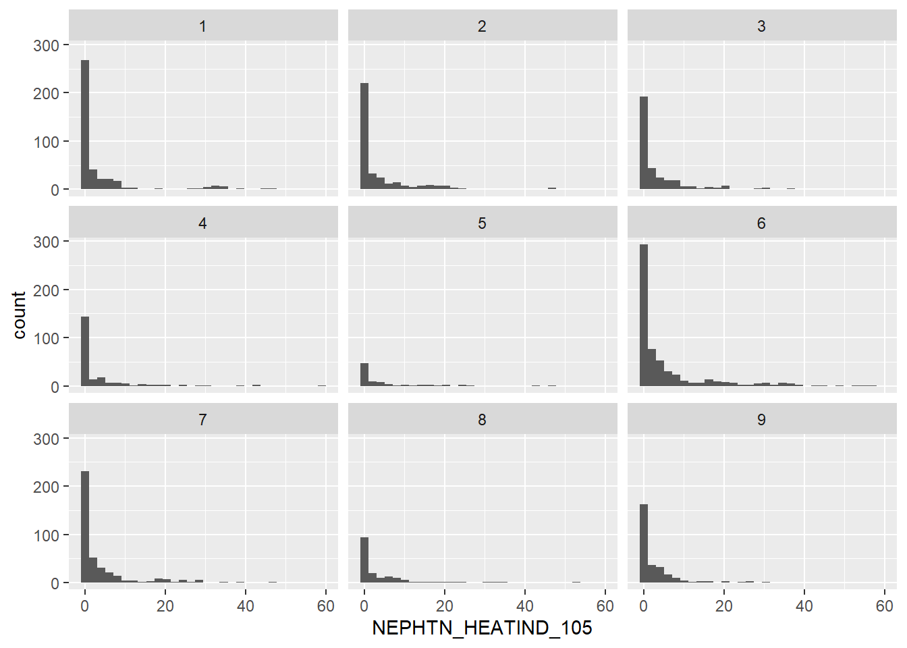
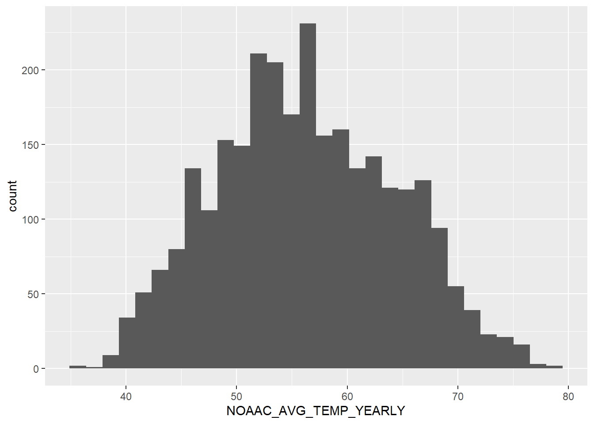
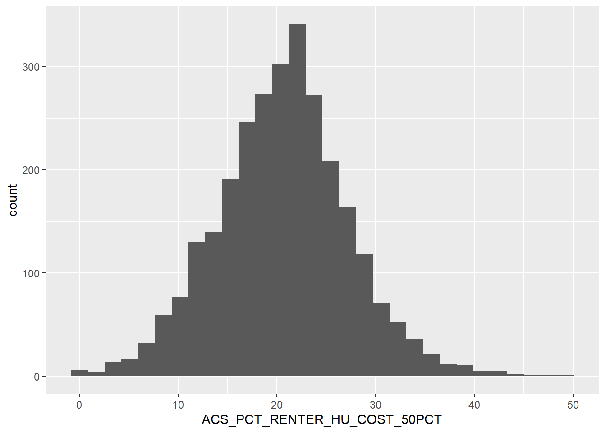
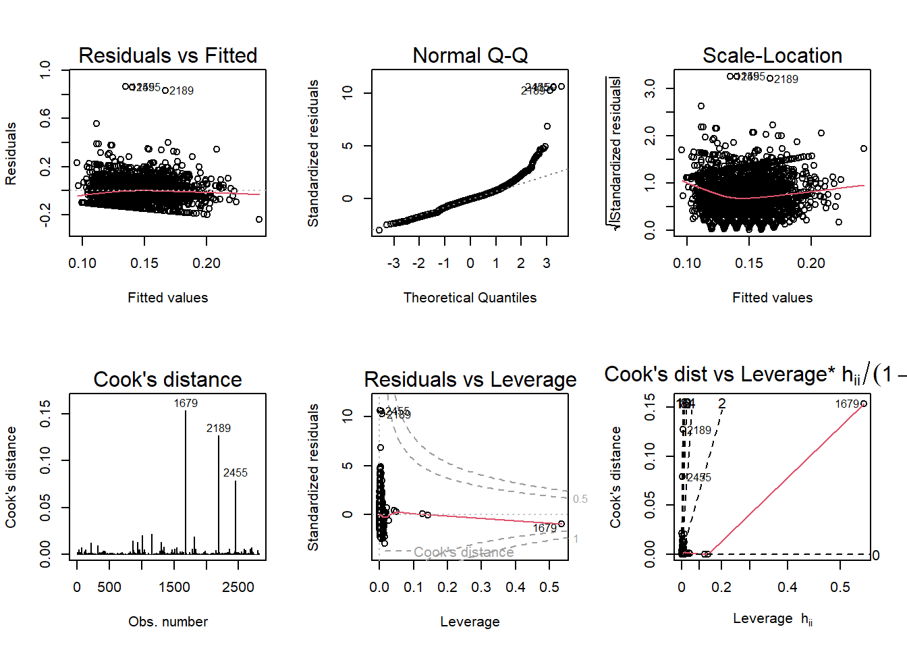

Multiple research reports state that there is a relationship between re-hospitalization rates and social characteristics, such as demographic and economic identifiers, (Barnett, Hsu & McWilliams, 2015; Murray, Allen, Clark, Daly & Jacobs, 2021). Specifically, racial characteristics play a large role in predicting re-hospitalization in a population (Li, Cai & Glance, 2015). While some articles examine economic and health factors contributing to these disparities, very few dig deep into environmental factors that influence this phenomenon, (Spatz, Bernheim, Horwitz & Herrin, 2020). With your zipcode affecting up to 60% of your health outcomes, this research is relevant to better improving one of our most costly health expenditures: hospitalization.
Re-hospitalization is a substantially costlier expenditure, as readmitting a patient further increases costs – especially if the diagnosis was untreated, poorly treated, or incorrectly treated. Most inpatient episodes characterized as a re-hospitalization when the patient is readmitted to the hospital 60 days after discharge. If the cause is different, sometimes that is counted as a re-hospitalization; other times, not so much, (Bhosale, K., Nath, R., Pandit, N., Agarwal, P., Khairnar, S., Yadav, B. & Chandrakar, S., 2020).
Research Question
This paper aims to explore how different environmental variables impact re-hospitalization rates on a county-by-county level. Due to the nature of this project, we will not be controlling for racial, ethnic, and sex variables. These environmental factors will include both common environmental concerns, such as heat index, average temperature, precipitation, and natural disasters, along with the built environment, mean travel time to work, renter burden, and population density. We will also stratify by rural/urban classification, to determine if counties above or below 250,000 population experience differences in re-hospitalization rates, dependent upon these explanatory variables.
The data-set chosen for this analysis is taken from the Agency for Healthcare Research and Quality, Social Determinants of Health (SDOH) Database. This data-set has over 300 variables to explore each SDOH domain: social context, economic context, education, healthcare, and the environment. We shall pull data from three of these five domains: social, economic, and environmental.
How re-hospitalization is measured is not clarified per this data-set’s codebook. However, the Center for Medicare and Medicaid (CMS) 30-day Risk-Standardized Readmission Rate (RSRR) measures re-hospitalization as an unplanned readmission to inpatient services. It does stratify and specify based upon diagnosis. As the AHRQ is a federal agency alongside CMS, it is likely that they are pulling from CMS for this measure and aggregating various diagnoses into one county rate.
Hypothesis
The hypothesis for this research report is:
Environmental factors increase rates of re-hospitalization in the United States.
Therefore, the null hypothesis is:
Environmental factors do not increase rates of re-hospitalization in the United States.
Various regression analyses shall be employed to determine the relationship – or lack thereof – between these variables.
First I’ll import the relevant libraries.
Then I’ll import the dataset and view the first six rows.
Out of 1400+ variables, we’ve whittled them down to 14. Of those 14, we have four (4) that are unique identifiers (FIPS, State, County, and Rural-Urban Continuation Code), four (4) environmental, two (2) economic, one (1) housing, two (2) built-enviornment, and one (1) healthcare outcome.
Before we launch into exploring these variables via descriptive statistics, first we need to determine where the NAs are and see if any of the variables will have a substantial amount of missing data.
Code
kable(colSums(is.na(df_new)))
x
COUNTYFIPS
0
STATE
0
COUNTY
0
AHRF_USDA_RUCC_2013
9
CEN_POPDENSITY_COUNTY
8
NEPHTN_HEATIND_105
121
NOAAC_AVG_TEMP_YEARLY
123
NOAAC_PRECIPITATION_AVG_YEARLY
123
NOAAS_TOT_NATURAL_DISASTERS
0
SAIPE_MEDIAN_HH_INCOME
87
SAIPE_PCT_POV
87
ACS_PCT_COMMT_60MINUP
8
ACS_PCT_RENTER_HU_COST_50PCT
8
LTC_AVG_OBS_REHOSP_RATE
410
Plenty of variables with missing data. Some are minor, such as population density, housing cost, and commute time variables with 8. Some are concerning, such as Heat Index, Average Yearly Temperature, and Average Yearly Precipitation, all around 120+.
The most concerning is – of course – our outcome variable, Re-Hospitalization Rates. This is not ideal. However, 410 / 3229 (12.6%) is not bad. That still leaves us with plenty of counties to review.
For our preliminary analysis, we’re going to provide summary statistics analyzing the 10 variables relevant to our research question, from Population Density to the end of the data-set, and a visualization for each.
Code
kable(describe(df_new))
vars
n
mean
sd
median
trimmed
mad
min
max
range
skew
kurtosis
se
COUNTYFIPS*
1
2814
1.407500e+03
8.124762e+02
1407.50000
1.407500e+03
1043.009100
1.000000e+00
2814.00000
2.813000e+03
0.0000000
-1.2012794
15.3161135
STATE*
2
2814
2.442928e+01
1.359471e+01
23.00000
2.441874e+01
16.308600
1.000000e+00
48.00000
4.700000e+01
0.0584273
-1.2662366
0.2562759
COUNTY*
3
2814
8.369051e+02
4.694844e+02
831.50000
8.339396e+02
584.885700
1.000000e+00
1674.00000
1.673000e+03
0.0526610
-1.1127183
8.8503222
AHRF_USDA_RUCC_2013*
4
2814
4.772210e+00
2.619826e+00
6.00000
4.717140e+00
2.965200
1.000000e+00
9.00000
8.000000e+00
0.0039932
-1.2985960
0.0493867
CEN_POPDENSITY_COUNTY
5
2814
2.893180e+02
1.877174e+03
50.74500
8.620448e+01
55.404762
5.000000e-01
71895.54000
7.189504e+04
25.8518141
850.3767977
35.3868910
NEPHTN_HEATIND_105
6
2814
4.098792e+00
8.186776e+00
0.00000
1.963144e+00
0.000000
0.000000e+00
59.00000
5.900000e+01
2.9358498
9.6132423
0.1543302
NOAAC_AVG_TEMP_YEARLY
7
2814
5.627572e+01
8.030342e+00
55.95833
5.617415e+01
8.784405
3.541667e+01
78.49167
4.307500e+01
0.1339838
-0.5932113
0.1513812
NOAAC_PRECIPITATION_AVG_YEARLY
8
2814
3.611196e+00
1.628908e+00
3.62375
3.638924e+00
1.887844
2.241667e-01
9.74500
9.520833e+00
-0.0899446
-0.7490480
0.0307068
NOAAS_TOT_NATURAL_DISASTERS
9
2814
3.678074e+01
4.541085e+01
25.00000
2.851510e+01
19.273800
0.000000e+00
662.00000
6.620000e+02
5.3277337
46.7140570
0.8560470
SAIPE_MEDIAN_HH_INCOME
10
2814
5.738628e+04
1.442985e+04
55107.00000
5.584910e+04
11735.520300
2.599700e+04
155362.00000
1.293650e+05
1.4172637
3.6789671
272.0193680
SAIPE_PCT_POV
11
2814
1.371606e+01
5.320367e+00
12.80000
1.323637e+01
4.744320
3.000000e+00
39.60000
3.660000e+01
1.0397109
1.6688697
0.1002951
ACS_PCT_COMMT_60MINUP
12
2814
8.155924e+00
4.864799e+00
6.85500
7.487016e+00
3.810282
0.000000e+00
35.91000
3.591000e+01
1.5015546
3.0016425
0.0917071
ACS_PCT_RENTER_HU_COST_50PCT
13
2814
2.060974e+01
6.649144e+00
20.78000
2.057608e+01
6.093486
0.000000e+00
49.26000
4.926000e+01
0.1136840
0.5492796
0.1253440
LTC_AVG_OBS_REHOSP_RATE
14
2814
1.449645e-01
8.432610e-02
0.14000
1.422425e-01
0.059304
0.000000e+00
1.00000
1.000000e+00
1.6404370
12.5443704
0.0015896
We should note for many of these analyses that the Urban / Rural Continuum Code runs from 1.00 to 9.00. Anything 4.00 or higher would be classified as Rural, with an urban population of less than 250,000.
We’ve surely got some out-liers. The mean is 291, but the median is 46. The max is 70,000. We’ve filtered those out for this visualization and set the bins close to the median. A left-skewed variable is expected, as the majority of counties in the United States would be classified as rural and therefore have low population densities.
As expected, a large part of the distribution is 4.0 or higher. 1.0 also has a high variation of population density, which may cause issues with the regression.
Due to the wide range in climate for the United States, it’s not surprising that there’s a large variety of out-liers. The median number of days a county experienceed a heat index of over 105F each year is 4 days per year. One county even reached 59 days – a Texas county!
`stat_bin()` using `bins = 30`. Pick better value with `binwidth`.

This distribution stays fairly constant, regardless of UR classification. 2.00 and 6.00 may have interesting insights, as their right tails are more pronounced, but that would be better suited to a map for quick reference. That is outside the scope of this project.
`stat_bin()` using `bins = 30`. Pick better value with `binwidth`.

There’s a good distribution. Average temperature each month is between 50 to 60 for most of the counties. The range (45) is also fairly large and shows the multiple climates within its borders.
Average precipitation each month is fairly uniform, with the mean at 3.49 inches of rain, on average, each month. This variable will most likely provide less variation in the analysis compared to others, such as population density and heat index. This can be both a good and a bad thing, as variations in precipitation was one of the variables I was most interested in exploring for this project. Oh well.
`stat_bin()` using `bins = 30`. Pick better value with `binwidth`.
Very close to a normal distribution, if barely left-skewed. A couple of high out-liers, hovering around $90,000+ in median household income, but the mean holds at $57,465.
`stat_bin()` using `bins = 30`. Pick better value with `binwidth`.
Another close to normal distribution. Most counties have poverty rates ranging from 10% to 20%. There are of course out-liers, especially a good number below 10%, but those are rare.
`stat_bin()` using `bins = 30`. Pick better value with `binwidth`.
Highly urbanized counties (1.00) have substantially less percentage poverty compared to their rural counterparts. 7.00, 8.00, and 9.00 have the highest spread, with some counties reaching 40% poverty rates! We barely see the urban areas (1.00 - 3.00) reach 30% poverty.
`stat_bin()` using `bins = 30`. Pick better value with `binwidth`.
The majority of counties fall below 10% of their population commuting up to and more than 60 minutes for work. Let’s do another facet grid to see if there’s a relationship between UR codes.
`stat_bin()` using `bins = 30`. Pick better value with `binwidth`.
Not particularly. The only codes that appear different than the rest include 1.00 (highly urban, over 1 million population) and 8.00 (completely rural, fewer than 2,500 population). 7.00 and higher is surprising, as these are counties with very little population and often not adjacent to metro areas. Therefore, populations are most likely condensed around “urban” centers for economic purposes.
Percent Renter Housing Costs Over 50 Percent of Income
`stat_bin()` using `bins = 30`. Pick better value with `binwidth`.

This is a startling figure. On average, 20% of counties have renters where 50% or more of their income goes toward housing costs. These leaves little to no room for other expenses and drives economic instability. The data is normally distributed and barely left-skewed – but still an item to consider with further analysis.
`stat_bin()` using `bins = 30`. Pick better value with `binwidth`.
Another right skewed variable. Lots of counties with 0.00 rates of re-hospitalization, and few, if any, above 0.50 per 100,000 people. From a health perspective, this is good news! From a research perspective, that’s going to make analysis a little trickier. However, the somewhat normal and/or bimodal distribution should be fairly easy to work with. While needing some transformation for a linear regression, we can test multiple models per each variable to determine which amendment provides the most robust inference.
Analysis
Hypothesis Testing
Remember that the hypothesis for this research report is:
Environmental factors increase rates of re-hospitalization in the United States.
We have nine (9) explanatory variables to work with, so we can run different regressions to determine what variables influence re-hospitalization rates the most – if at all – and how they interact with other variables.
Reminder that the nine (9) explanatory variable are broken down into three domains: environmental, economic, and built environment.
Environmental entails:
Day with Heat Index over 105F
Average Annual Precipitation
Average Annual Precipitation
Total Natural Disasters Per Year
Economic is:
Median Household Income
Percent Poverty
And the Built Environment includes:
Population Density
Percent Rental Housing Cost, over 50%
Percent Commuting Alone, over 60 minutes
We will run four models to test the hypothesis. They shall examine each environmental variable’s impact on the dependent variable, re-hospitalization rates. The control variables will be the economic and built environment variables, five (5) in total.
Let’s plot these regressions, removing the control variables to get a better visualization. For two of the models, we will employ log transformations for data that is skewed. These variables were identified during the Descriptive Statistic section. This shall include a log transformation for the response variable in particular.
Code
ggplot(df_new, aes(NEPHTN_HEATIND_105,log(LTC_AVG_OBS_REHOSP_RATE))) +geom_point() +geom_smooth(method = lm,se =FALSE,fullrange =TRUE) +labs(title ="Model 1",x ="Heat Index Over 105F",y ="Re-Hospitalization Rates")
Of these four, it looks like temperature and precipitation have the best fit. All but Total Natural Disasters have a positive relationship with the response variable, so that helps us in determining if we should accept or reject the null hypothesis.
We will reject the null hypothesis. While it looks like, at first glance, that there is little positive relationship, we can at least note that there is some positive relationship. In the next two sections, we will dig deeper into each model, examining the p-value and R-Squared value, to see what level of relationship is present.
Model Comparisons
Now we will compare the four (4) models in more depth.
Three of the four explanatory variables meet the statistical significance threshold (0.001). Total Natural Disasters Per Year do not. This helps in finalizing whether to accept or reject the null hypothesis. The p-value is most significant for precipitation, model 3.
For the model fit, the adjusted R squared ranges from 0.04 to 0.06. The highest is for precipitation, model 3.
Precipitation also has the lowest residual standard error, at 0.081.
Finally, we’re going to calculate the PRESS statistic (Predicted Residual Sum of Squares) to best determine which model can predict the response variable based upon the explanatory variables.
Code
PRESS <-function(model) { i <-residuals(model)/(1-lm.influence(model)$hat)sum(i^2)}PRESS(model1)
[1] 19.17066
Code
PRESS(model2)
[1] 18.86294
Code
PRESS(model3)
[1] 18.77811
Code
PRESS(model4)
[1] 19.23593
Model 3 has the lowest PRESS score.
Due to a strong p-value, PRESS score, and model fit compared to the other three models, model 3 will be chosen as the final model for the diagnostic exploration. While the adjusted R squared value is not strong when controlling for economic and built environment factors, there is still a positive relationship, and therefore some influence on the dependent variable.
Diagnostics
Finally, we’ll plot the diagnostics to best understand the model.
Code
par(mfrow =c(2,3));plot(model3, which =1:6)

Of the six plots, Cook’s distance is the most striking and relevant, as there are three out-liers: 1679, 2189, and 2455.
1679 is New York County, New York.
2189 is Mellette County, South Dakota.
2455 is Real County, Texas.
Otherwise, the plot looks good.
Normal Q-Q violates this test, as the points at the right tail of the plot do not generally fall along the line. This is very apparent for our three out-liers. The remaining plots do not violate their tested assumptions and further cement the model’s reliability.
Conclusion
This paper explored the relationship between re-hospitalization rates and four environmental variables, when controlling for common variables that regularly influence the dependent variable. These four variables included days with a heat index over 105F, average annual temperature, average annual precipitation, and total natural disasters.
Four models were selected, one for each variable, to best determine which measure best impacted re-hospitalization rates. Three of the four variables were statistically significant and two had a larger adjusted R squared value than the others. Precipitation was selected as the variable with the best model fit to explain re-hospitalization rate impact. While the adjusted R-squared value is negligible (0.06), there is a positive relationship that is statistically significant. Therein we see some form of an influence large amounts of annual precipitation has on re-hospitalization rates.
I would have liked to tighten the analysis further instead of including multiple (10) variables, by focusing on some key measurements: Precipitation as the explanatory, Poverty as the control, and filtering by Rurality to determine the relationship with re-hospitalization rates. I could then fit different models (Simple Linear, Poisson, Polynomial, etc.) to see which worked best. I may not have time to do so for the poster presentation, nor would that perhaps be within the scope of this project. Either way, I have something for future classes, perhaps via time series analysis or machine learning (prediction over inference). Either way, this helped me better understand the robustness of linear regression models.
References
Barnett, M., Hsu, J. & McWilliams, M. (2015). “Patient Characteristics and Differences in Hospital Readmission Rates.” JAMA Intern Med., 175(11): 1803-1812.
Bhosale KH, Nath RK, Pandit N, Agarwal P, Khairnar S, Yadav B, & Chandrakar S. (2020). “Rate of Rehospitalization in 60 Days of Discharge and It’s Determinants in Patients with Heart Failure with Reduced Ejection Fraction in a Tertiary Care Centre in India.” Int J Heart Fail. 21;2(2):131-144.
Li, Y., Cai, X. & Glance, L. (2015). “Disparities in 30-day rehospitalization rates among Medicare skilled nursing facility residents by race and site of care.” Med Care, 53(12): 1058-1065.
Murray, F., Allen, M., Clark, C., Daly, C. & Jacobs, D. (2021). “Socio-demographic and -economic factors associated with 30-day readmission for conditions targeted by the hospital readmissions reduction program: a population-based study.” BMC Public Health, 21.
Spatz, E., Bernheim, S., Horwitz, L. & Herrin, J. (2020). Community factors and hospital wide readmission rates: Does context matter? PLoS One, 15(10).
Source Code
---title: "Final Part 2"author: "Caleb Hill"desription: "Part 2 of the Final Project"date: "11/08/2022"format: html: toc: true code-fold: true code-copy: true code-tools: truecategories: - finalpart2 - caleb.hill---## IntroductionMultiple research reports state that there is a relationship between re-hospitalization rates and social characteristics, such as demographic and economic identifiers, (Barnett, Hsu & McWilliams, 2015; Murray, Allen, Clark, Daly & Jacobs, 2021). Specifically, racial characteristics play a large role in predicting re-hospitalization in a population (Li, Cai & Glance, 2015). While some articles examine economic and health factors contributing to these disparities, very few dig deep into environmental factors that influence this phenomenon, (Spatz, Bernheim, Horwitz & Herrin, 2020). With your zipcode affecting up to 60% of your health outcomes, this research is relevant to better improving one of our most costly health expenditures: hospitalization.Re-hospitalization is a substantially costlier expenditure, as readmitting a patient further increases costs -- especially if the diagnosis was untreated, poorly treated, or incorrectly treated. Most inpatient episodes characterized as a re-hospitalization when the patient is readmitted to the hospital 60 days after discharge. If the cause is different, sometimes that is counted as a re-hospitalization; other times, not so much, (Bhosale, K., Nath, R., Pandit, N., Agarwal, P., Khairnar, S., Yadav, B. & Chandrakar, S., 2020).### Research QuestionThis paper aims to explore how different environmental variables impact re-hospitalization rates on a county-by-county level. Due to the nature of this project, we will not be controlling for racial, ethnic, and sex variables. These environmental factors will include both common environmental concerns, such as heat index, average temperature, precipitation, and natural disasters, along with the built environment, mean travel time to work, renter burden, and population density. We will also stratify by rural/urban classification, to determine if counties above or below 250,000 population experience differences in re-hospitalization rates, dependent upon these explanatory variables.The data-set chosen for this analysis is taken from the Agency for Healthcare Research and Quality, Social Determinants of Health (SDOH) Database. This data-set has over 300 variables to explore each SDOH domain: social context, economic context, education, healthcare, and the environment. We shall pull data from three of these five domains: social, economic, and environmental.How re-hospitalization is measured is not clarified per this data-set's codebook. However, the Center for Medicare and Medicaid (CMS) 30-day Risk-Standardized Readmission Rate (RSRR) measures re-hospitalization as an unplanned readmission to inpatient services. It does stratify and specify based upon diagnosis. As the AHRQ is a federal agency alongside CMS, it is likely that they are pulling from CMS for this measure and aggregating various diagnoses into one county rate.### HypothesisThe hypothesis for this research report is:- Environmental factors increase rates of re-hospitalization in the United States.Therefore, the null hypothesis is:- Environmental factors do not increase rates of re-hospitalization in the United States.Various regression analyses shall be employed to determine the relationship -- or lack thereof -- between these variables.First I'll import the relevant libraries.```{r, include = FALSE}#| label: setup#| warning: falselibrary(tidyverse)library(readxl)library(psych)library(knitr)library(corrplot)theme_minimal()knitr::opts_chunk$set(echo =TRUE)```Then I'll import the dataset and view the first six rows.```{r}df <- SDOH_2020_COUNTY_1_0 <-read_excel("_data/SDOH_2020_COUNTY_1_0.xlsx", sheet ="Data")head(df)```Next I want to verify the class is a dataframe. Otherwise, I'll need to transform the data to make it easier to work with.```{r}class(df)```All good here.Now on to data transformation. We will need to select only the relevant columns for this analysis.```{r}df_new <- df %>%select(COUNTYFIPS, STATE, COUNTY, AHRF_USDA_RUCC_2013, CEN_POPDENSITY_COUNTY, NEPHTN_HEATIND_105, NOAAC_AVG_TEMP_YEARLY, NOAAC_PRECIPITATION_AVG_YEARLY, NOAAS_TOT_NATURAL_DISASTERS, SAIPE_MEDIAN_HH_INCOME, SAIPE_PCT_POV, ACS_PCT_COMMT_60MINUP, ACS_PCT_RENTER_HU_COST_50PCT, LTC_AVG_OBS_REHOSP_RATE) nrow(df_new)head(df_new)```Out of 1400+ variables, we've whittled them down to 14. Of those 14, we have four (4) that are unique identifiers (FIPS, State, County, and Rural-Urban Continuation Code), four (4) environmental, two (2) economic, one (1) housing, two (2) built-enviornment, and one (1) healthcare outcome.Before we launch into exploring these variables via descriptive statistics, first we need to determine where the NAs are and see if any of the variables will have a substantial amount of missing data.```{r}kable(colSums(is.na(df_new)))```Plenty of variables with missing data. Some are minor, such as population density, housing cost, and commute time variables with 8. Some are concerning, such as Heat Index, Average Yearly Temperature, and Average Yearly Precipitation, all around 120+.The most concerning is -- of course -- our outcome variable, Re-Hospitalization Rates. This is not ideal. However, 410 / 3229 (12.6%) is not bad. That still leaves us with plenty of counties to review.```{r}df_new <- df_new %>%drop_na() %>%print(nrow(df_new))```2,814 x 14 is a good place to start.## Descriptive StatisticsFor our preliminary analysis, we're going to provide summary statistics analyzing the 10 variables relevant to our research question, from Population Density to the end of the data-set, and a visualization for each.```{r}kable(describe(df_new))```We should note for many of these analyses that the Urban / Rural Continuum Code runs from 1.00 to 9.00. Anything 4.00 or higher would be classified as Rural, with an urban population of less than 250,000.### Population Density```{r}pop_den <- df_new %>%filter(CEN_POPDENSITY_COUNTY <5000)ggplot(pop_den, aes(CEN_POPDENSITY_COUNTY)) +geom_histogram(binwidth =50)```We've surely got some out-liers. The mean is 291, but the median is 46. The max is 70,000. We've filtered those out for this visualization and set the bins close to the median. A left-skewed variable is expected, as the majority of counties in the United States would be classified as rural and therefore have low population densities.Let's plot a facet-grid on these codes.```{r}ggplot(pop_den, aes(CEN_POPDENSITY_COUNTY)) +geom_histogram(binwidth =50) +facet_wrap('AHRF_USDA_RUCC_2013')```As expected, a large part of the distribution is 4.0 or higher. 1.0 also has a high variation of population density, which may cause issues with the regression.### Heat Index Over 105F```{r}ggplot(df_new, aes(NEPHTN_HEATIND_105)) +geom_boxplot()```Due to the wide range in climate for the United States, it's not surprising that there's a large variety of out-liers. The median number of days a county experienceed a heat index of over 105F each year is 4 days per year. One county even reached 59 days -- a Texas county!```{r}ggplot(df_new, aes(NEPHTN_HEATIND_105)) +geom_histogram()```The data-set has a very left skewed distribution, similar to Population Density. Most counties experience under 10 days with a Heat Index over 105.```{r}ggplot(df_new, aes(NEPHTN_HEATIND_105)) +geom_histogram() +facet_wrap('AHRF_USDA_RUCC_2013')```This distribution stays fairly constant, regardless of UR classification. 2.00 and 6.00 may have interesting insights, as their right tails are more pronounced, but that would be better suited to a map for quick reference. That is outside the scope of this project.### Average Yearly Temperature```{r}ggplot(df_new, aes(NOAAC_AVG_TEMP_YEARLY)) +geom_histogram()```There's a good distribution. Average temperature each month is between 50 to 60 for most of the counties. The range (45) is also fairly large and shows the multiple climates within its borders.### Average Yearly Precipitation```{r}ggplot(df_new, aes(NOAAC_PRECIPITATION_AVG_YEARLY)) +geom_boxplot()```Average precipitation each month is fairly uniform, with the mean at 3.49 inches of rain, on average, each month. This variable will most likely provide less variation in the analysis compared to others, such as population density and heat index. This can be both a good and a bad thing, as variations in precipitation was one of the variables I was most interested in exploring for this project. Oh well.### Total Natural Disasters```{r}ggplot(df_new, aes(NOAAS_TOT_NATURAL_DISASTERS)) +geom_boxplot()```Many high out-liers over 100; some even reaching over 600. Let's plot a histogram to get a better look at the data's distribution.```{r}ggplot(df_new, aes(NOAAS_TOT_NATURAL_DISASTERS)) +geom_histogram()```A left skewed variable, with observations dropping off dramatically once we reach 50 total recorded natural disasters.```{r}ggplot(df_new, aes(NOAAS_TOT_NATURAL_DISASTERS)) +geom_histogram() +facet_wrap('AHRF_USDA_RUCC_2013')```Little to no difference in UR classification for natural disaster out-liers.### Median Household Income```{r}ggplot(df_new, aes(SAIPE_MEDIAN_HH_INCOME)) +geom_histogram()```Very close to a normal distribution, if barely left-skewed. A couple of high out-liers, hovering around \$90,000+ in median household income, but the mean holds at \$57,465.### Percent in Poverty```{r}ggplot(df_new, aes(SAIPE_PCT_POV)) +geom_histogram()```Another close to normal distribution. Most counties have poverty rates ranging from 10% to 20%. There are of course out-liers, especially a good number below 10%, but those are rare.```{r}ggplot(df_new, aes(SAIPE_PCT_POV)) +geom_histogram() +facet_wrap('AHRF_USDA_RUCC_2013')```Highly urbanized counties (1.00) have substantially less percentage poverty compared to their rural counterparts. 7.00, 8.00, and 9.00 have the highest spread, with some counties reaching 40% poverty rates! We barely see the urban areas (1.00 - 3.00) reach 30% poverty.### Percent Commuting Alone, Over 60 Minutes```{r}ggplot(df_new, aes(ACS_PCT_COMMT_60MINUP)) +geom_histogram()```The majority of counties fall below 10% of their population commuting up to and more than 60 minutes for work. Let's do another facet grid to see if there's a relationship between UR codes.```{r}ggplot(df_new, aes(ACS_PCT_COMMT_60MINUP)) +geom_histogram() +facet_wrap('AHRF_USDA_RUCC_2013')```Not particularly. The only codes that appear different than the rest include 1.00 (highly urban, over 1 million population) and 8.00 (completely rural, fewer than 2,500 population). 7.00 and higher is surprising, as these are counties with very little population and often not adjacent to metro areas. Therefore, populations are most likely condensed around "urban" centers for economic purposes.### Percent Renter Housing Costs Over 50 Percent of Income```{r}ggplot(df_new, aes(ACS_PCT_RENTER_HU_COST_50PCT)) +geom_histogram()```This is a startling figure. On average, 20% of counties have renters where 50% or more of their income goes toward housing costs. These leaves little to no room for other expenses and drives economic instability. The data is normally distributed and barely left-skewed -- but still an item to consider with further analysis.### Re-hospitalization Rate```{r}ggplot(df_new, aes(LTC_AVG_OBS_REHOSP_RATE)) +geom_histogram()```Another right skewed variable. Lots of counties with 0.00 rates of re-hospitalization, and few, if any, above 0.50 per 100,000 people. From a health perspective, this is good news! From a research perspective, that's going to make analysis a little trickier. However, the somewhat normal and/or bimodal distribution should be fairly easy to work with. While needing some transformation for a linear regression, we can test multiple models per each variable to determine which amendment provides the most robust inference.## Analysis### Hypothesis TestingRemember that the hypothesis for this research report is:- Environmental factors increase rates of re-hospitalization in the United States.We have nine (9) explanatory variables to work with, so we can run different regressions to determine what variables influence re-hospitalization rates the most -- if at all -- and how they interact with other variables.Reminder that the nine (9) explanatory variable are broken down into three domains: environmental, economic, and built environment.Environmental entails:- Day with Heat Index over 105F- Average Annual Precipitation- Average Annual Precipitation- Total Natural Disasters Per YearEconomic is:- Median Household Income- Percent PovertyAnd the Built Environment includes:- Population Density- Percent Rental Housing Cost, over 50%- Percent Commuting Alone, over 60 minutesWe will run four models to test the hypothesis. They shall examine each environmental variable's impact on the dependent variable, re-hospitalization rates. The control variables will be the economic and built environment variables, five (5) in total.```{r}model1 <-lm(LTC_AVG_OBS_REHOSP_RATE ~ NEPHTN_HEATIND_105 + CEN_POPDENSITY_COUNTY + SAIPE_MEDIAN_HH_INCOME + SAIPE_PCT_POV + ACS_PCT_COMMT_60MINUP + ACS_PCT_RENTER_HU_COST_50PCT, df_new)model2 <-lm(LTC_AVG_OBS_REHOSP_RATE ~ NOAAC_AVG_TEMP_YEARLY + CEN_POPDENSITY_COUNTY + SAIPE_MEDIAN_HH_INCOME + SAIPE_PCT_POV + ACS_PCT_COMMT_60MINUP + ACS_PCT_RENTER_HU_COST_50PCT, df_new)model3 <-lm(LTC_AVG_OBS_REHOSP_RATE ~ NOAAC_PRECIPITATION_AVG_YEARLY + CEN_POPDENSITY_COUNTY + SAIPE_MEDIAN_HH_INCOME + SAIPE_PCT_POV + ACS_PCT_COMMT_60MINUP + ACS_PCT_RENTER_HU_COST_50PCT, df_new)model4 <-lm(LTC_AVG_OBS_REHOSP_RATE ~ NOAAS_TOT_NATURAL_DISASTERS + CEN_POPDENSITY_COUNTY + SAIPE_MEDIAN_HH_INCOME + SAIPE_PCT_POV + ACS_PCT_COMMT_60MINUP + ACS_PCT_RENTER_HU_COST_50PCT, df_new)```Let's plot these regressions, removing the control variables to get a better visualization. For two of the models, we will employ log transformations for data that is skewed. These variables were identified during the Descriptive Statistic section. This shall include a log transformation for the response variable in particular.```{r}ggplot(df_new, aes(NEPHTN_HEATIND_105,log(LTC_AVG_OBS_REHOSP_RATE))) +geom_point() +geom_smooth(method = lm,se =FALSE,fullrange =TRUE) +labs(title ="Model 1",x ="Heat Index Over 105F",y ="Re-Hospitalization Rates")ggplot(df_new, aes(log(NOAAC_AVG_TEMP_YEARLY),log(LTC_AVG_OBS_REHOSP_RATE))) +geom_point() +geom_smooth(method = lm,se =FALSE,fullrange =TRUE) +labs(title ="Model 2",x ="Average Annual Temperature",y ="Re-Hospitalization Rates")ggplot(df_new, aes(NOAAC_PRECIPITATION_AVG_YEARLY,log(LTC_AVG_OBS_REHOSP_RATE))) +geom_point() +geom_smooth(method = lm,se =FALSE,fullrange =TRUE) +labs(title ="Model 3",x ="Average Annual Precipitation",y ="Re-Hospitalization Rates")ggplot(df_new, aes(NOAAS_TOT_NATURAL_DISASTERS,log(LTC_AVG_OBS_REHOSP_RATE))) +geom_point() +geom_smooth(method = lm,se =FALSE,fullrange =TRUE) +labs(title ="Model 4",x ="Total Natural Disasters",y ="Re-Hospitalization Rates")```Of these four, it looks like temperature and precipitation have the best fit. All but Total Natural Disasters have a positive relationship with the response variable, so that helps us in determining if we should accept or reject the null hypothesis.We will reject the null hypothesis. While it looks like, at first glance, that there is little positive relationship, we can at least note that there is *some* positive relationship. In the next two sections, we will dig deeper into each model, examining the p-value and R-Squared value, to see what level of relationship is present.### Model ComparisonsNow we will compare the four (4) models in more depth.```{r}summary(model1)summary(model2)summary(model3)summary(model4)```Three of the four explanatory variables meet the statistical significance threshold (0.001). Total Natural Disasters Per Year do not. This helps in finalizing whether to accept or reject the null hypothesis. The p-value is most significant for precipitation, model 3.For the model fit, the adjusted R squared ranges from 0.04 to 0.06. The highest is for precipitation, model 3.Precipitation also has the lowest residual standard error, at 0.081.Finally, we're going to calculate the PRESS statistic (Predicted Residual Sum of Squares) to best determine which model can predict the response variable based upon the explanatory variables.```{r}PRESS <-function(model) { i <-residuals(model)/(1-lm.influence(model)$hat)sum(i^2)}PRESS(model1)PRESS(model2)PRESS(model3)PRESS(model4)```Model 3 has the lowest PRESS score.Due to a strong p-value, PRESS score, and model fit compared to the other three models, model 3 will be chosen as the final model for the diagnostic exploration. While the adjusted R squared value is not strong when controlling for economic and built environment factors, there is still a positive relationship, and therefore some influence on the dependent variable.### DiagnosticsFinally, we'll plot the diagnostics to best understand the model.```{r}par(mfrow =c(2,3));plot(model3, which =1:6)```Of the six plots, Cook's distance is the most striking and relevant, as there are three out-liers: 1679, 2189, and 2455.1679 is New York County, New York.2189 is Mellette County, South Dakota.2455 is Real County, Texas.Otherwise, the plot looks good.Normal Q-Q violates this test, as the points at the right tail of the plot do not generally fall along the line. This is very apparent for our three out-liers. The remaining plots do not violate their tested assumptions and further cement the model's reliability.## ConclusionThis paper explored the relationship between re-hospitalization rates and four environmental variables, when controlling for common variables that regularly influence the dependent variable. These four variables included days with a heat index over 105F, average annual temperature, average annual precipitation, and total natural disasters.Four models were selected, one for each variable, to best determine which measure best impacted re-hospitalization rates. Three of the four variables were statistically significant and two had a larger adjusted R squared value than the others. Precipitation was selected as the variable with the best model fit to explain re-hospitalization rate impact. While the adjusted R-squared value is negligible (0.06), there is a positive relationship that is statistically significant. Therein we see some form of an influence large amounts of annual precipitation has on re-hospitalization rates.I would have liked to tighten the analysis further instead of including multiple (10) variables, by focusing on some key measurements: Precipitation as the explanatory, Poverty as the control, and filtering by Rurality to determine the relationship with re-hospitalization rates. I could then fit different models (Simple Linear, Poisson, Polynomial, etc.) to see which worked best. I may not have time to do so for the poster presentation, nor would that perhaps be within the scope of this project. Either way, I have something for future classes, perhaps via time series analysis or machine learning (prediction over inference). Either way, this helped me better understand the robustness of linear regression models.## ReferencesBarnett, M., Hsu, J. & McWilliams, M. (2015). "Patient Characteristics and Differences in Hospital Readmission Rates." JAMA Intern Med., 175(11): 1803-1812.Bhosale KH, Nath RK, Pandit N, Agarwal P, Khairnar S, Yadav B, & Chandrakar S. (2020). "Rate of Rehospitalization in 60 Days of Discharge and It's Determinants in Patients with Heart Failure with Reduced Ejection Fraction in a Tertiary Care Centre in India." Int J Heart Fail. 21;2(2):131-144.Li, Y., Cai, X. & Glance, L. (2015). "Disparities in 30-day rehospitalization rates among Medicare skilled nursing facility residents by race and site of care." Med Care, 53(12): 1058-1065.Murray, F., Allen, M., Clark, C., Daly, C. & Jacobs, D. (2021). "Socio-demographic and -economic factors associated with 30-day readmission for conditions targeted by the hospital readmissions reduction program: a population-based study." BMC Public Health, 21.Spatz, E., Bernheim, S., Horwitz, L. & Herrin, J. (2020). Community factors and hospital wide readmission rates: Does context matter? PLoS One, 15(10).